Submodule 2.4
Introduction to Spatial Data
Fall 2022
Load script for submodule 2.4
Click here to download the script! Save the script to a convenient folder on your laptop.
Load your script in RStudio. To do this, open RStudio and click on the folder icon in the toolbar at the top and load your script.
Let’s get started with spatial data in R!
The Science of Where
Spatial analysis allows you to solve complex location-oriented problems and better understand where and what is occurring in your world. It goes beyond mere mapping to let you study the characteristics of places and the relationships between them.
A good resource for learning about spatial data in R is Geocomputation with R. The book is available free online.
Spatial isn’t Special (in R)
Spatial data, just like all other data in R, are combinations of
vectors, matrices, and lists. These combinations of data are wrapped
into specialized classes, and have many specialized methods to make
working with them easier. Most of the functionality comes from the
sf package for vector data, and raster (or
terra) package for raster data. In addition to these
packages we will use a few other packages:
rgdal- an R wrapper to the open source gdal libraryrgeos- an R wrapper to the open source geos libraryleaflet- an R wrapper to the javascript library ‘leaflet’ for interactive maps
# clear the global environment -------------------------
rm(list = ls())
# install.packages(c('dplyr', 'spData', 'sf', 'raster', 'rgdal', 'rgeos', 'rcartocolor', 'magrittr', 'leaflet')) # run this line if you haven't already installed these packages!
file_name <- 'https://kevintshoemaker.github.io/R-Bootcamp/data.zip'
download.file(file_name, destfile = 'data.zip')
unzip(zipfile = 'data.zip', exdir = '.')## Warning in unzip(zipfile = "data.zip", exdir = "."): error 1 in extracting from
## zip file# load libraries and set working directory
library(dplyr)
library(spData)
library(sf)
library(raster)
library(rgdal)
library(rgeos)
library(rcartocolor)
library(magrittr)
library(leaflet)Check the footnotes for info about some of the warnings 1
Spatial Data
Everything is related to everything else, but near things are more related than distant thingsWaldo Tobler, Tobler’s first law of geography
There are two ways to model geographic data: as vectors or rasters. In the sections that follow we will first review vector data, then raster data. First we will review the theory behind each model then demonstrate how to implement them in R
Vector Data
Vector 2 data represents the world as points with a geographic refence (they are somewhere on the earth). These points can be linked together to form more complex geometries such as lines and polygons.
Points
Points represent single features, such as a tree in a forest or a location of an captured animal. Points are pairs of (x, y) coordinates. Attribute data can be attached to each point. An example of points with attribute data might be trees in a forest, and the attributes are height, diameter, species, etc.
Lines
Lines are composed of many vertices (points) that are ordered and connected. Each line can also have data associated with it. Roads or rivers are great examples, and might have data like width, speed limit, flow as attribute data.
Polygons
A polygon is a set of closed lines, where the first vertex is also the last vertex. Polygons can have holes in them (think an island in a lake), which is a polygon enclosed inside another polygon. And just like lines, multiple polygon objects can make up a single polygons (multi-polygons) layer. For instance, a chain of islands.
Raster
Raster data divides a landscape into a grid to represent continuous (and sometimes discrete) data such as elevation. The raster has equally sized rectangular cells (or pixels) that can have one or more values (multi-band rasters). The size of the cells is refered to as the resolution of the grid, smaller cell sizes are higher resolution. The value of that cell generally represents the average value for the area that cell covers.
Coordinate Reference Systems
An important component all spatial objects share is a coordinate refernece system (CRS). A CRS defines how the spatial elements of the data relate to the surface of the Earth. CRSs are either geographic or projected.
Geographic Coordinate Systems
Geographic coordinate system: identify any location on the Earth using longitude and latitude. These are measures of the angular distance from the Prime Meridian or equatorial plane (for longitude and latitude, respectively). Distances in Geographic CRSs are measured in degrees, minutes, and seconds (or other angular unit of measurement).
Projected Coordinate Systems
Projected coordinate system: based on Cartesian coordinates on a flat surface. They have an origin, x and y axes. These rely on map projections to convert the three dimensional shape surface of the earth into Easting and Northing (x and y) in the projected CRS.
The projection from an ellipsoid to a plane cannot be done without distorting some of the properties of the Earth’s surface. In most cases one or two of the following properties are distorted: area, direction, shape, distance. Projections are often named based on the properties the accurately maintain: equal-area maintains area, azimuthal maintains direction, equidistant maintains distance, and conformal maintains local shape.

Coordinate reference systems are confusing- Here is a super helpful reference.
Spatial Objects
In 2005 Edzer Pebesma and Roger Bivand cretaed the sp
package to handle spatial data in R. sp provides a set of
classes and methods for vector and raster data types. At the time, there
weren’t many agreed upon standards for spatial data. In 2004 the Open
Geospatial Consortium published a formal international standard for
spatial data called simple feature access. It was originaly
developed for SQL, and has since been adopted by many spatial
communities (ESRI, QGIS, Postgres).
Over the last year Pebesma et al. are actively developing a new
package to handle spatial data in R. It is called sf for
simple feature.
Introduction to simple features
At the core sf extends the data.frame class
to include a geometry column. This geometry column can be of several
types (found within the simple feature standard): POINT,
LINE, POLYGON, …etc.
The major classes in the sf package are:
sf: adata.framewith a spatial attributesfc: a column storing the all the geometries for different records of adata.framesfg: a geometry of each individual record.
Let’s dig into the details of spatial data with sf in
the sections below.
sf geometry types
As mentioned above, sf has many different types of
geometries. Let’s create a few simple geometries so that we have an idea
of what they are. These (class sfg) are the basic building
blocks of all the classes in the sf package.
## a single point
pt <- st_point(c(1, 1))
plot(pt)
## multiple points
mpt <- st_multipoint(rbind(c(0, 0), c(1, 0), c(1, 1), c(0, 1), c(0, 0)))
plot(mpt)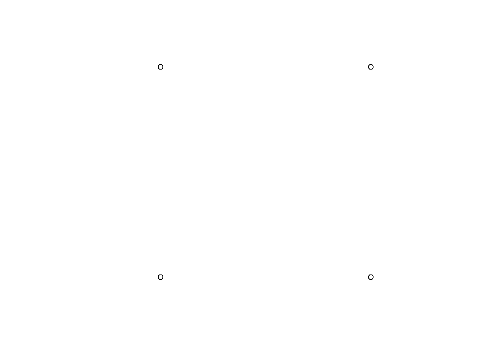
## a line
l <- st_linestring(rbind(c(0, 0), c(1, 0), c(1, 1), c(0, 1), c(0, 0)))
plot(l, col = 'purple')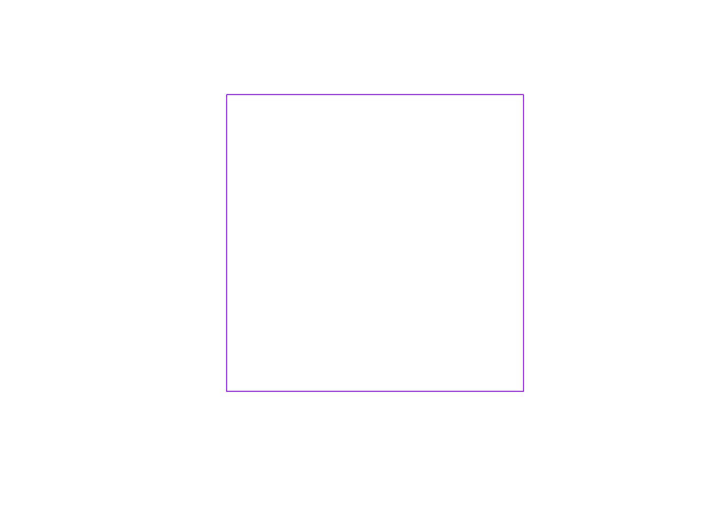
## a polygon
poly <- st_polygon(list(rbind(c(0, 0), c(1, 0), c(1, 1), c(0, 1), c(0, 0))))
plot(poly, col = 'purple')## ...etc, multiline and multipolygonsA comprehensive overview of all the geometry classes can be found here
Creating Spatial Points Data
Let’s start out by creating a sf object.
First, download the following data set and save to your working directory: reptiles.csv
# create spatial points data frame ----
## load reptile data
reptiles <- readr::read_csv('reptiles.csv')
## create a SpatialPoints object
## provide data (x), the columns that contain the x & y (coords)
## and the coordinate reference system (crs)
sf_points <- st_as_sf(x = reptiles,
coords = c('x', 'y'),
crs = '+init=epsg:26911')## Warning in CPL_crs_from_input(x): GDAL Message 1: +init=epsg:XXXX syntax is
## deprecated. It might return a CRS with a non-EPSG compliant axis order.## inspect the SpatialPoints object
str(sf_points)## sf [60,955 × 7] (S3: sf/tbl_df/tbl/data.frame)
## $ species : chr [1:60955] "Crotaphytus bicinctores" "Sauromalus ater" "Sauromalus ater" "Sauromalus ater" ...
## $ date : Date[1:60955], format: "2015-04-03" "2015-04-03" ...
## $ total : num [1:60955] 4 1 3 1 1 1 1 1 1 1 ...
## $ label : chr [1:60955] "Ivanpah-Pahrump Valleys" "Ivanpah-Pahrump Valleys" "Ivanpah-Pahrump Valleys" "Ivanpah-Pahrump Valleys" ...
## $ year : num [1:60955] 2015 2015 2015 2015 2015 ...
## $ month : chr [1:60955] "Apr" "Apr" "Apr" "Apr" ...
## $ geometry:sfc_POINT of length 60955; first list element: 'XY' num [1:2] 581906 4015885
## - attr(*, "sf_column")= chr "geometry"
## - attr(*, "agr")= Factor w/ 3 levels "constant","aggregate",..: NA NA NA NA NA NA
## ..- attr(*, "names")= chr [1:6] "species" "date" "total" "label" ...We used the st_as_sf function to create an object of
class sf. The first parameter in the function call is
x, which is the object to be converted to class
sf. This should be a data.frame like object.
The second parameter, coords, are the names of the
coordiante fields in the object supplied to x, given as a
vector. The final parameter, crs, is the coordinate
reference system. This data was collected using NAD83 zone 11, so we
used the EPSG ID (26911) to specify the projection.
Let’s review the structure and summary data of this sf
object.
# inspecting the sf object ----
## checking the projection of the sf object
st_crs(sf_points)
## summary funciton
summary(sf_points)
## what type is the geometry column
class(sf_points$geometry)
## plot the data
plot(sf_points[0])Subset sf object
head(sf_points)## Simple feature collection with 6 features and 6 fields
## Geometry type: POINT
## Dimension: XY
## Bounding box: xmin: 408859 ymin: 4015674 xmax: 581906 ymax: 4369481
## Projected CRS: NAD83 / UTM zone 11N
## # A tibble: 6 × 7
## species date total label year month geometry
## <chr> <date> <dbl> <chr> <dbl> <chr> <POINT [m]>
## 1 Crotaphytus bici… 2015-04-03 4 Ivan… 2015 Apr (581906 4015885)
## 2 Sauromalus ater 2015-04-03 1 Ivan… 2015 Apr (581738 4015674)
## 3 Sauromalus ater 2015-04-03 3 Ivan… 2015 Apr (581630 4015679)
## 4 Sauromalus ater 2015-04-03 1 Ivan… 2015 Apr (581209 4016290)
## 5 Sauromalus ater 2015-04-03 1 Ivan… 2015 Apr (581046 4015795)
## 6 Crotaphytus bici… 2010-06-30 1 Dixi… 2010 Jun (408859 4369481)As you can see, this does look like a normal data.frame
with a geometry column. In this case the geometry is a point, as shown
by a coordinate pair. Just like data.frames we can use
indexing to subset the data. One of the columns is species. Lets use
this column to subset the data frame for only desert horned lizards
(**Phrynosoma platyrhinos*).
# subset an sf object ----
phpl <- sf_points[sf_points$species == 'Phrynosoma platyrhinos', ]
head(phpl)## Simple feature collection with 6 features and 6 fields
## Geometry type: POINT
## Dimension: XY
## Bounding box: xmin: 399708 ymin: 3978995 xmax: 678717.7 ymax: 4370088
## Projected CRS: NAD83 / UTM zone 11N
## # A tibble: 6 × 7
## species date total label year month geometry
## <chr> <date> <dbl> <chr> <dbl> <chr> <POINT [m]>
## 1 Phrynosoma platy… 2010-04-23 1 Ivan… 2010 Apr (605707 3978995)
## 2 Phrynosoma platy… 2012-06-04 1 Gabb… 2012 Jun (416711 4310457)
## 3 Phrynosoma platy… 2012-08-30 1 Dixi… 2012 Aug (399708 4354045)
## 4 Phrynosoma platy… 2013-05-04 1 Las … 2013 May (678717.7 3998239)
## 5 Phrynosoma platy… 2014-05-09 1 Cact… 2014 May (516255 4099335)
## 6 Phrynosoma platy… 2015-08-04 1 Dixi… 2015 Aug (406478 4370088)## check to see that there is only one species in the data.frame
phpl %>% magrittr::extract2('species') %>% unique()## [1] "Phrynosoma platyrhinos"If you check the class of sf_points you’ll see a list of
different classes. sf_points is an object of class
sf. But it inherits properties of the tbl_df,
tbl, and data.frame class. That means that any
methods that work on these classes will also work on objects of class
sf.
class(sf_points)## [1] "sf" "tbl_df" "tbl" "data.frame"## we can filter using dplyr syntax
sf_points %>%
dplyr::filter(species == 'Phrynosoma platyrhinos') %>%
head()## Simple feature collection with 6 features and 6 fields
## Geometry type: POINT
## Dimension: XY
## Bounding box: xmin: 399708 ymin: 3978995 xmax: 678717.7 ymax: 4370088
## Projected CRS: NAD83 / UTM zone 11N
## # A tibble: 6 × 7
## species date total label year month geometry
## <chr> <date> <dbl> <chr> <dbl> <chr> <POINT [m]>
## 1 Phrynosoma platy… 2010-04-23 1 Ivan… 2010 Apr (605707 3978995)
## 2 Phrynosoma platy… 2012-06-04 1 Gabb… 2012 Jun (416711 4310457)
## 3 Phrynosoma platy… 2012-08-30 1 Dixi… 2012 Aug (399708 4354045)
## 4 Phrynosoma platy… 2013-05-04 1 Las … 2013 May (678717.7 3998239)
## 5 Phrynosoma platy… 2014-05-09 1 Cact… 2014 May (516255 4099335)
## 6 Phrynosoma platy… 2015-08-04 1 Dixi… 2015 Aug (406478 4370088)Finally, let’s plot this data. The plot function provided by
sf behaves slightly differently than it does for most other
classes. It’ll create a plot for each attribute column in the
sf objecct. I think this behavior is strange, I’m not sure
I love it.
## plot with sf::plot
plot(head(sf_points, n = 100))
If you want to plot just a single variable, you must use the following syntax.
plot(head(sf_points['year'], n = 100))
## the plot function also uses this syntax to select a single row to plot
## plot(head(sf_points['year'], n = 100))
## and if you don't want to color the plot by feature you can use 0
## to specify plotting 0 attributes
## note, this is plotting all the points
plot(sf_points[0], col = 'purple')
Loading Spatial Data
It is possible to create polygons from scratch in R. It takes a bit
of work, and I’ll provide an example later for reference. Most of the
time you will not need to do this. Instead you will likely load data
from a shapefile. In the code example below we are going to load county
polygons for the state of Nevada. Like everything in R there are
multiple methods to read shapefiles. Since we are using the
sf package we’ll use the functions provided in that
package.
NOTE: for the next examples you will need to use GIS files that are stored in the following compressed data directory: GIS data for module 2.6. If you want to follow along, please download this file and unzip it in your working directory. Make sure the folder called “data” (that contains subdirectories called “nv_counties” and “roads”) is in now in your working directory.
#############
# Nevada Counties example...
# read in nv county shapefile ----
counties <- st_read(dsn = 'data/nv_counties/NV_Admin_Counties.shp')## Reading layer `NV_Admin_Counties' from data source
## `C:\Users\Kevin\Documents\GitHub\R-Bootcamp\data\nv_counties\NV_Admin_Counties.shp'
## using driver `ESRI Shapefile'
## Simple feature collection with 17 features and 6 fields
## Geometry type: POLYGON
## Dimension: XY
## Bounding box: xmin: 240110.2 ymin: 3875834 xmax: 765543.5 ymax: 4653630
## Projected CRS: NAD83 / UTM zone 11N## once finished check the structure
str(counties, max.level = 3)## Classes 'sf' and 'data.frame': 17 obs. of 7 variables:
## $ ST : chr "NV" "NV" "NV" "NV" ...
## $ CNTYNAME : chr "Washoe" "Elko" "Humboldt" "Eureka" ...
## $ COV_NAME : chr "WASHOE" "ELKO" "HUMBOLDT" "EUREKA" ...
## $ STATEPLANE: chr "4651" "4601" "4651" "4601" ...
## $ STATEPLA_1: chr "West Zone" "East Zone" "West Zone" "East Zone" ...
## $ Acres : num 4194677 11007449 6177805 2673373 3529614 ...
## $ geometry :sfc_POLYGON of length 17; first list element: List of 1
## ..$ : num [1:1486, 1:2] 307493 307395 307254 307197 307152 ...
## ..- attr(*, "class")= chr [1:3] "XY" "POLYGON" "sfg"
## - attr(*, "sf_column")= chr "geometry"
## - attr(*, "agr")= Factor w/ 3 levels "constant","aggregate",..: NA NA NA NA NA NA
## ..- attr(*, "names")= chr [1:6] "ST" "CNTYNAME" "COV_NAME" "STATEPLANE" ...## some data management
### check the contents of the geometry field
counties$geometry## Geometry set for 17 features
## Geometry type: POLYGON
## Dimension: XY
## Bounding box: xmin: 240110.2 ymin: 3875834 xmax: 765543.5 ymax: 4653630
## Projected CRS: NAD83 / UTM zone 11N
## First 5 geometries:### let's double check that projection of the counties
st_crs(counties)## Coordinate Reference System:
## User input: NAD83 / UTM zone 11N
## wkt:
## PROJCRS["NAD83 / UTM zone 11N",
## BASEGEOGCRS["NAD83",
## DATUM["North American Datum 1983",
## ELLIPSOID["GRS 1980",6378137,298.257222101,
## LENGTHUNIT["metre",1]]],
## PRIMEM["Greenwich",0,
## ANGLEUNIT["degree",0.0174532925199433]],
## ID["EPSG",4269]],
## CONVERSION["UTM zone 11N",
## METHOD["Transverse Mercator",
## ID["EPSG",9807]],
## PARAMETER["Latitude of natural origin",0,
## ANGLEUNIT["Degree",0.0174532925199433],
## ID["EPSG",8801]],
## PARAMETER["Longitude of natural origin",-117,
## ANGLEUNIT["Degree",0.0174532925199433],
## ID["EPSG",8802]],
## PARAMETER["Scale factor at natural origin",0.9996,
## SCALEUNIT["unity",1],
## ID["EPSG",8805]],
## PARAMETER["False easting",500000,
## LENGTHUNIT["metre",1],
## ID["EPSG",8806]],
## PARAMETER["False northing",0,
## LENGTHUNIT["metre",1],
## ID["EPSG",8807]]],
## CS[Cartesian,2],
## AXIS["(E)",east,
## ORDER[1],
## LENGTHUNIT["metre",1]],
## AXIS["(N)",north,
## ORDER[2],
## LENGTHUNIT["metre",1]],
## ID["EPSG",26911]]### How does this projection compare to the sf_points object?
### double check the sf_points projection
st_crs(sf_points)## Coordinate Reference System:
## User input: +init=epsg:26911
## wkt:
## PROJCRS["NAD83 / UTM zone 11N",
## BASEGEOGCRS["NAD83",
## DATUM["North American Datum 1983",
## ELLIPSOID["GRS 1980",6378137,298.257222101,
## LENGTHUNIT["metre",1]]],
## PRIMEM["Greenwich",0,
## ANGLEUNIT["degree",0.0174532925199433]],
## ID["EPSG",4269]],
## CONVERSION["UTM zone 11N",
## METHOD["Transverse Mercator",
## ID["EPSG",9807]],
## PARAMETER["Latitude of natural origin",0,
## ANGLEUNIT["degree",0.0174532925199433],
## ID["EPSG",8801]],
## PARAMETER["Longitude of natural origin",-117,
## ANGLEUNIT["degree",0.0174532925199433],
## ID["EPSG",8802]],
## PARAMETER["Scale factor at natural origin",0.9996,
## SCALEUNIT["unity",1],
## ID["EPSG",8805]],
## PARAMETER["False easting",500000,
## LENGTHUNIT["metre",1],
## ID["EPSG",8806]],
## PARAMETER["False northing",0,
## LENGTHUNIT["metre",1],
## ID["EPSG",8807]],
## ID["EPSG",16011]],
## CS[Cartesian,2],
## AXIS["(E)",east,
## ORDER[1],
## LENGTHUNIT["metre",1,
## ID["EPSG",9001]]],
## AXIS["(N)",north,
## ORDER[2],
## LENGTHUNIT["metre",1,
## ID["EPSG",9001]]],
## USAGE[
## SCOPE["unknown"],
## AREA["North America - between 120°W and 114°W - onshore and offshore. Canada - Alberta; British Columbia; Northwest Territories; Nunavut. United States (USA) - California; Idaho; Nevada, Oregon; Washington."],
## BBOX[30.88,-120,83.5,-114]]]### then explicitly compare them using boolean logic
st_crs(counties) == st_crs(sf_points)## [1] TRUE### let's reproject the points to our desired CRS, utm
### we will go into more detail on reprojections later
counties <- st_transform(counties, st_crs(sf_points))
### double check they are equal
st_crs(counties) == st_crs(sf_points)## [1] TRUEcounties, just like sf_points, is an object
of class sf, which is extends the data.frame
class. The difference is that the counties$geometry column
is of a different vector type, in this case the type is
POLYGON
## check structure of a polygon within a SpatialPolygonsDataFrame
str(counties)
## check the geometry type
class(counties$geometry)
## print the first few rows for inspection
head(counties, n = 4)Plotting polygons uses the same methods as plotting points.
## plot a spatial polygon
plot(counties)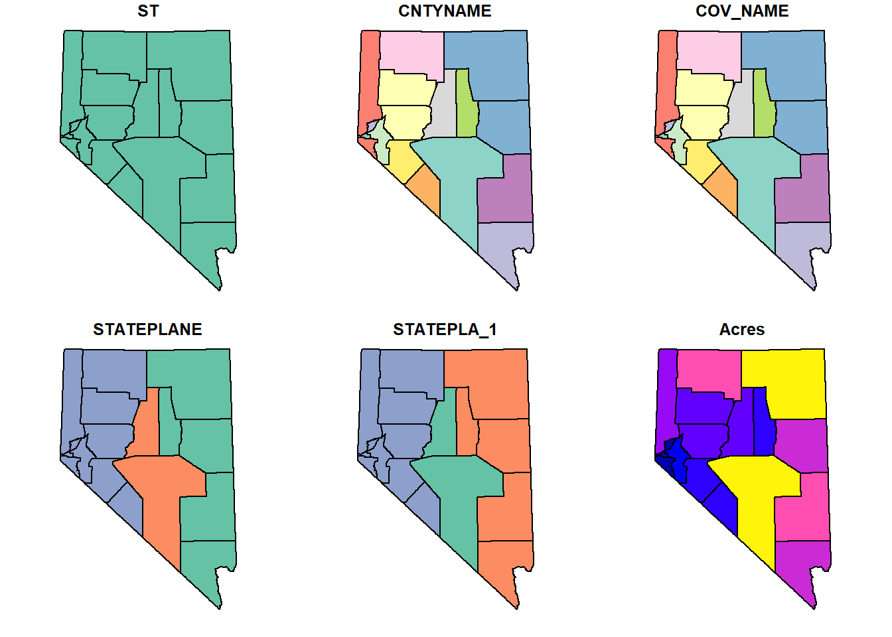
## we don't wan't to color by any feature
## st_geometry returns just the geometry column
plot(st_geometry(counties))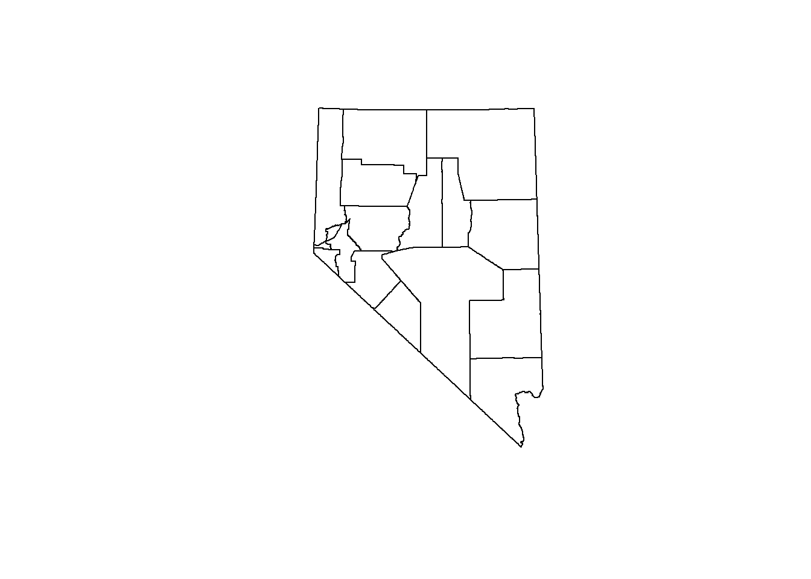
## we can plot certain polygons...
## which has a plotting behavior we aren't used to
## this will plot every attribute for the first county
plot(counties[1, ])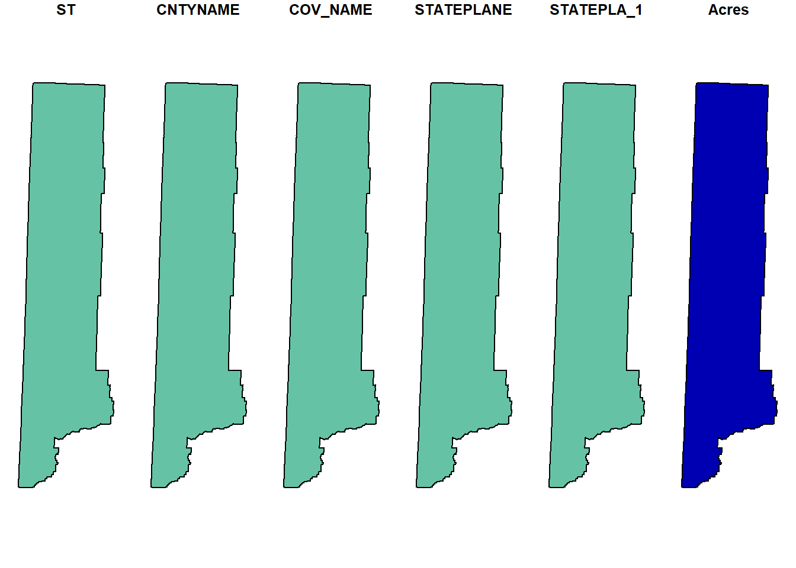
## if we only want to include the outline, the following will work
plot(st_geometry(counties)[1])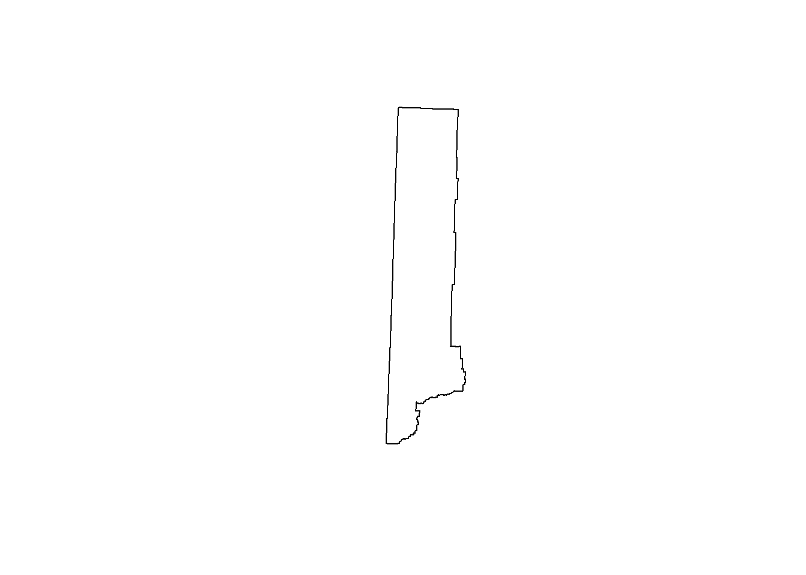
## multiple at once
layout(matrix(1:3, ncol = 3, nrow = 1))
plot(st_geometry(counties)[1])
plot(st_geometry(counties)[1:4])
plot(st_geometry(counties)[counties$CNTYNAME == 'Clark'])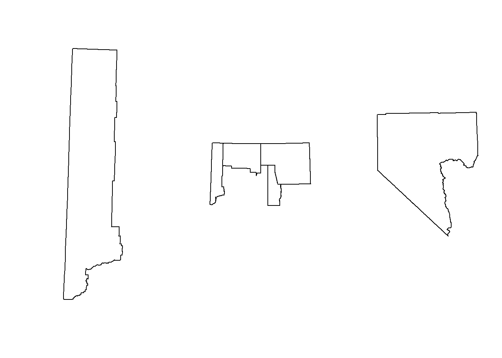
## we can even plot our reptile points ontop of the counties
layout(matrix(1))
plot(st_geometry(counties))
plot(st_geometry(sf_points), pch = 1, cex = .5, col = 'purple', add = TRUE)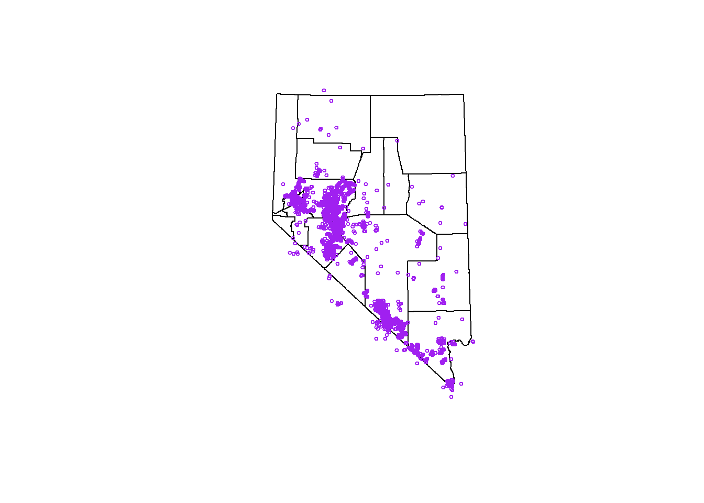
GIS Operations
Spatial Joins
Spatial data joining relies on shared geographic space. Joining two spatial objects results in a new object with the columns of the two joined spatial objects. This operation is also known as a spatial overly. The term spatial overlay might do a better job defining what the operation does. We overlay one spatial object over a second spatial object and ask the question, “For each item in the first geometry, what data in the second geometry is underneath it”.
The sf package has a function called
st_join() that will perform the join. The function usage is
as follows, st_join(x, y) where x is the first
sf object and y is the second sf
object.
The st_join function isn’t limited to points and
polygons, it can be run with lines and points, lines and lines, polygons
and polygons, and lines and polygons. The code chunk below runs a
spatial join for point and polygon geometries.
# Spatial joins ----
## use the %over% funcstion, which is the same as over(spdf_points, counties)
rslt <- st_join(sf_points, counties)
## what does rslt look like?
str(rslt)## sf [60,955 × 13] (S3: sf/tbl_df/tbl/data.frame)
## $ species : chr [1:60955] "Crotaphytus bicinctores" "Sauromalus ater" "Sauromalus ater" "Sauromalus ater" ...
## $ date : Date[1:60955], format: "2015-04-03" "2015-04-03" ...
## $ total : num [1:60955] 4 1 3 1 1 1 1 1 1 1 ...
## $ label : chr [1:60955] "Ivanpah-Pahrump Valleys" "Ivanpah-Pahrump Valleys" "Ivanpah-Pahrump Valleys" "Ivanpah-Pahrump Valleys" ...
## $ year : num [1:60955] 2015 2015 2015 2015 2015 ...
## $ month : chr [1:60955] "Apr" "Apr" "Apr" "Apr" ...
## $ geometry :sfc_POINT of length 60955; first list element: 'XY' num [1:2] 581906 4015885
## $ ST : chr [1:60955] "NV" "NV" "NV" "NV" ...
## $ CNTYNAME : chr [1:60955] "Nye" "Nye" "Nye" "Nye" ...
## $ COV_NAME : chr [1:60955] "NYE" "NYE" "NYE" "NYE" ...
## $ STATEPLANE: chr [1:60955] "4626" "4626" "4626" "4626" ...
## $ STATEPLA_1: chr [1:60955] "Central Zone" "Central Zone" "Central Zone" "Central Zone" ...
## $ Acres : num [1:60955] 11613744 11613744 11613744 11613744 11613744 ...
## - attr(*, "sf_column")= chr "geometry"
## - attr(*, "agr")= Factor w/ 3 levels "constant","aggregate",..: NA NA NA NA NA NA NA NA NA NA ...
## ..- attr(*, "names")= chr [1:12] "species" "date" "total" "label" ...## how about summary
summary(rslt)## species date total label
## Length:60955 Min. :2010-03-18 Min. : 1.000 Length:60955
## Class :character 1st Qu.:2011-06-13 1st Qu.: 1.000 Class :character
## Mode :character Median :2013-05-25 Median : 1.000 Mode :character
## Mean :2013-03-19 Mean : 1.093
## 3rd Qu.:2014-08-18 3rd Qu.: 1.000
## Max. :2016-09-14 Max. :88.000
##
## year month geometry ST
## Min. :2010 Length:60955 POINT :60955 Length:60955
## 1st Qu.:2011 Class :character epsg:NA : 0 Class :character
## Median :2013 Mode :character +proj=utm ...: 0 Mode :character
## Mean :2013
## 3rd Qu.:2014
## Max. :2016
##
## CNTYNAME COV_NAME STATEPLANE STATEPLA_1
## Length:60955 Length:60955 Length:60955 Length:60955
## Class :character Class :character Class :character Class :character
## Mode :character Mode :character Mode :character Mode :character
##
##
##
##
## Acres
## Min. : 168888
## 1st Qu.: 3213476
## Median : 3213476
## Mean : 6174634
## 3rd Qu.:11613744
## Max. :11613744
## NA's :130rslt is an sf object with 60,955
observations of 13 columns (all the columns of each sf
object in the functino call). If you look at sf_points
there are 60,955 elements, and rslt has 60,955 elements,
this is a good sign! To reiterate st_join() has taken each
point in our first geometry, sf_points, and looked at the
polygons in counties to see which polygon that point lies
within, then binds those colunns together to make a new sf
object.
Notice that the geometry column for of rslt is still a
POINT. What does happens if you switch the order of
sf_points and counties? Run the code chunk
below to find out.
## what happens if you change the order of the input objects?
summary(st_join(counties, sf_points))Spatial Unions
Spatial unions (or aggregation) can dissolve the boundaries of geometries that are touching. This is a common operation if you are trying to create a boundary of multiple polygons
# unioning polygons ----
## all of these function come from the rgeos package.
## select two counties to union
plot(st_geometry(counties)[2:3])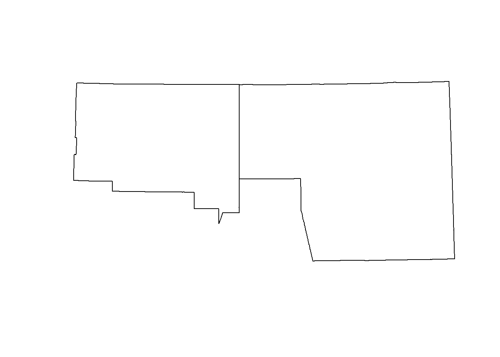
## union them
plot(st_union(st_geometry(counties)[2:3]))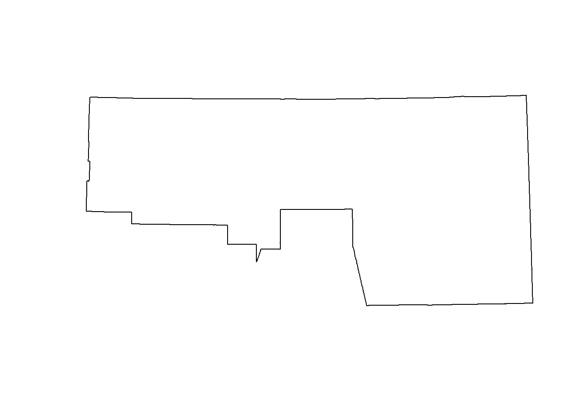
# union all interior polygons ----
## we ccan do the same thing to get a the border of NV
## the following uses the pipe (%>%) to increase code readability
nv <- counties %>% st_geometry() %>% st_union()
plot(nv)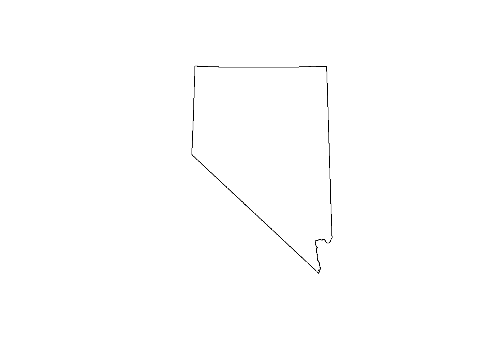
Topological relations
Topological relations describe the spatial relationship between objects. That is, whether sets of spatial objects are within, outside, touching, or intersecting eachother. The example below will help illustrate that point.
# topological relations ----
# create a polygon
a_poly = st_polygon(list(rbind(c(-1, -1), c(1, -1), c(1, 1), c(-1, -1))))
a = st_sfc(a_poly)
# create a line
l_line = st_linestring(x = matrix(c(-1, -1, -0.5, 1), ncol = 2))
l = st_sfc(l_line)
# create points
p_matrix = matrix(c(0.5, 1, -1, 0, 0, 1, 0.5, 1), ncol = 2)
p_multi = st_multipoint(x = p_matrix)
p = st_cast(st_sfc(p_multi), "POINT")
## plot
par(pty = "s")
plot(a, border = "red", col = "gray", axes = TRUE)
plot(l, add = TRUE)
plot(p, add = TRUE, lab = 1:4)
text(p_matrix[, 1] + 0.04, p_matrix[, 2] - 0.06, 1:4, cex = 1.3)
In the plot above there are several points (1 - 4), each with a certain spatial relationship to the triangle polygon.
Point 1 (p[1]) is with the polygon (a), we
can check with the following code:
st_within(p[1], a, sparse = F)## [,1]
## [1,] TRUEHowever, point 2 (p[2]) isn’t within the polygon,
instead, it is touching the polygon.
st_within(p[2], a, sparse = F)## [,1]
## [1,] FALSEst_touches(p[2], a, sparse = F)## [,1]
## [1,] TRUEBoth points do intersect polygon a:
st_intersects(p[1:2], a, sparse = F)## [,1]
## [1,] TRUE
## [2,] TRUEAnd points 3 and 4 (p[3:4]) don’t intersect the
polgyon.
st_intersects(p[3:4], a, sparse = F)## [,1]
## [1,] FALSE
## [2,] FALSEThe same operations can be performed with the line (l),
or even with points. The sparse = F tells the function to
return a boolean matrix rather than a sparse matrix of 1’s and 0’s. For
analysis I recommend using the default sparse = T due to
the smaller footprint.
Points outside NV
Now that we have a basic understanding of some spatial operations,
and the topological relationships between geometries we can get rid of
all the points in sf_points that are outside of Nevada (see
the map below).

# remove points outside
sparse <- st_intersects(rslt, nv)
sel_logical <- lengths(sparse) > 0
sf_points <- rslt[sel_logical, ]
## check the results by uncommenting this code, and running
# plot(nv)
# plot(st_geometry(sf_points), col = 'purple', add = T)We will use this sf_points object for the rest of the
module, so make sure you get the correct result.
Reproject
Spatial data is often read into the R session with a coordinate
reference system (CRS) defined by the maintainers of the data set. When
reading shapefiles with the st_read() function, the
.prj file specifies a CRS of the data. In some cases, where
you are creating the data yourself, such as the reptile data we loaded
earlier, we need to know what CRS the data is being collected in. These
settings can be changed in handheld GPSs. If the coordinates are in a
combination of degrees, minutes, seconds the CRS is WGS84, a geographic
coordinate system with an EPSG ID of 4326. In Nevada, if the coordinates
are in meters then it is likely NAD83 zone 11. The zone is important as
you’ll see below.
In order to convert coordinates from one CRS to another we use the
st_transform() function and provide the CRS we want to
reproject the data into. Below we will use a dataset from
spData that is an sf object of the contiguous
US. The data is originally in EPSG 4269. We will convert this to
WGS84.
# spTranform ----
## we will use a data set from the spData package
## the epsg id for this data is 4269
us_states <- spData::us_states
## check the CRS
st_crs(us_states)## Coordinate Reference System:
## User input: EPSG:4269
## wkt:
## GEOGCS["NAD83",
## DATUM["North_American_Datum_1983",
## SPHEROID["GRS 1980",6378137,298.257222101,
## AUTHORITY["EPSG","7019"]],
## TOWGS84[0,0,0,0,0,0,0],
## AUTHORITY["EPSG","6269"]],
## PRIMEM["Greenwich",0,
## AUTHORITY["EPSG","8901"]],
## UNIT["degree",0.0174532925199433,
## AUTHORITY["EPSG","9122"]],
## AUTHORITY["EPSG","4269"]]plot(st_geometry(us_states),
col = 'white',
graticule = st_crs(us_states),
axes = T, main = 'Initial, EPSG = 4269')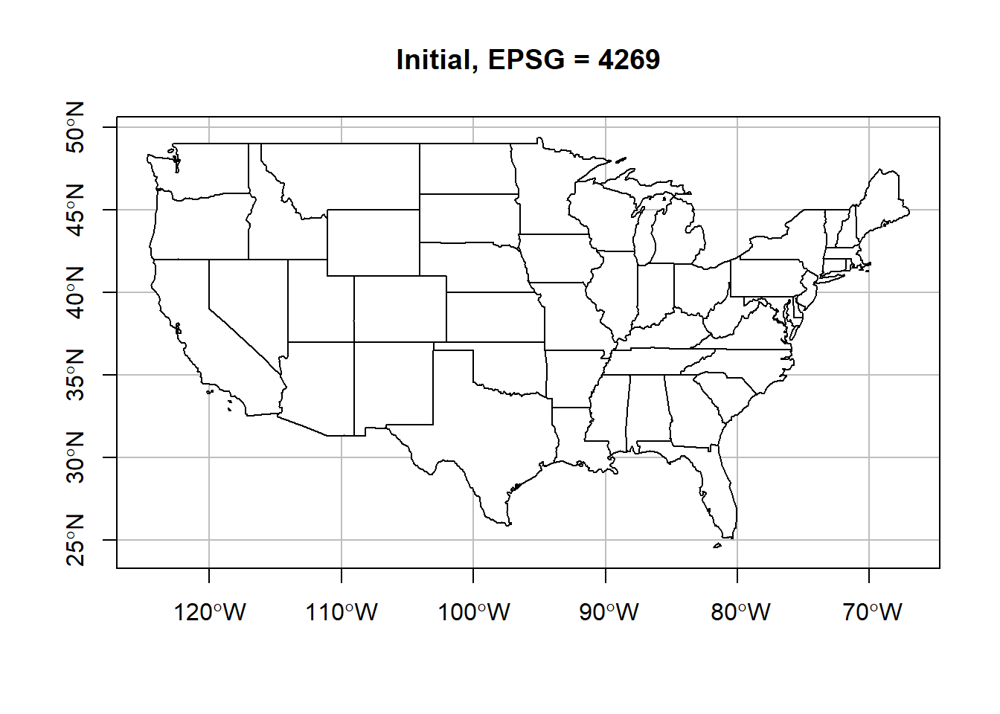
## reproject basics, and replot
wgs_usa <- st_transform(us_states, crs = '+init=epsg:4326')
plot(st_geometry(wgs_usa),
col = 'white',
graticule = st_crs(wgs_usa),
axes = T, main = 'WGS84')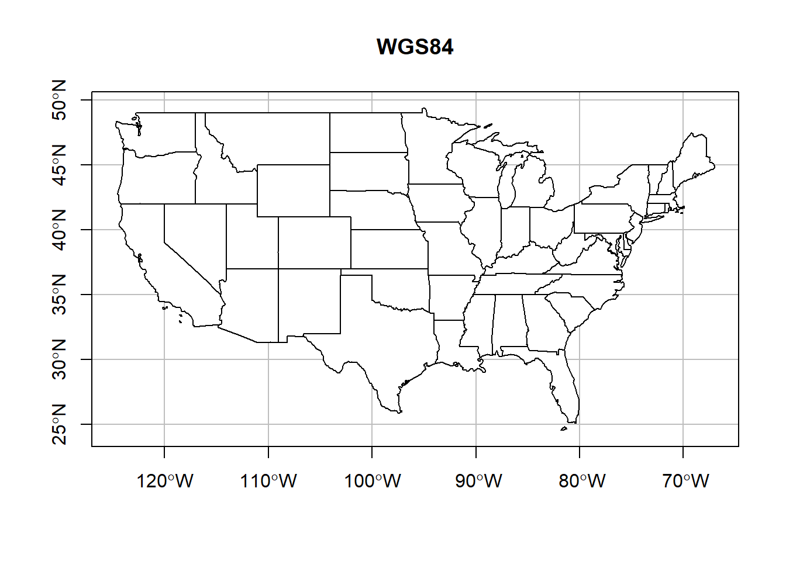
There are many, many different CRSs to choose from. Ultimately, the most important apsect of CRSs (and spatial data) is that we document the CRS of our data. Without a CRS we can’t plot our points onto Earth. So please, do everyone a favor and document your data’s CRS.
Below is a figure demonstrating how the shape of Nevada counties change depending on the projection. You can find a list of all these projections, and many more, at the PROJ4 website.
## we can do this with other reprojections as well so you can really tell a difference
layout(matrix(1:8, nrow = 2))
us_states %>% st_geometry() %>%
st_transform(crs = "+proj=aea +lat_1=29.5 +lat_2=45.5 +lat_0=37.5 +lon_0=-96 +x_0=0 +y_0=0 +ellps=GRS80 +datum=NAD83 +units=m +no_defs" ) %>%
plot(col = 'white',
graticule = st_crs(wgs_usa),
axes = T, main = 'Albers Equal Area')
us_states %>% st_geometry() %>%
st_transform(crs = '+proj=sinu') %>%
plot(col = 'white',
graticule = st_crs(wgs_usa),
axes = T, main = 'Van Der Grinten')
us_states %>% st_geometry() %>%
st_transform(crs = '+proj=robin') %>%
plot(col = 'white',
graticule = st_crs(wgs_usa),
axes = T, main = 'Robinson')
us_states %>% st_geometry() %>%
st_transform(crs = '+proj=gall') %>%
plot(col = 'white',
graticule = st_crs(wgs_usa),
axes = T, main = 'Gall-Peters')
us_states %>% st_geometry() %>%
st_transform(crs = '+proj=eqc') %>%
plot(col = 'white',
graticule = st_crs(wgs_usa),
axes = T, main = 'Plate Carree')
us_states %>% st_geometry() %>%
st_transform(crs = '+proj=goode') %>%
plot(col = 'white',
graticule = st_crs(wgs_usa),
axes = T, main = 'Goode Homolosine')
us_states %>% st_geometry() %>%
st_transform(crs = '+init=epsg:26911') %>%
plot(col = 'white',
graticule = st_crs(wgs_usa),
axes = T, main = 'NAD83 Zone 11')
us_states %>% st_geometry() %>%
st_transform(crs = '+init=epsg:26921') %>%
plot(col = 'white',
graticule = st_crs(wgs_usa),
axes = T, main = 'NAD83 Zone 21')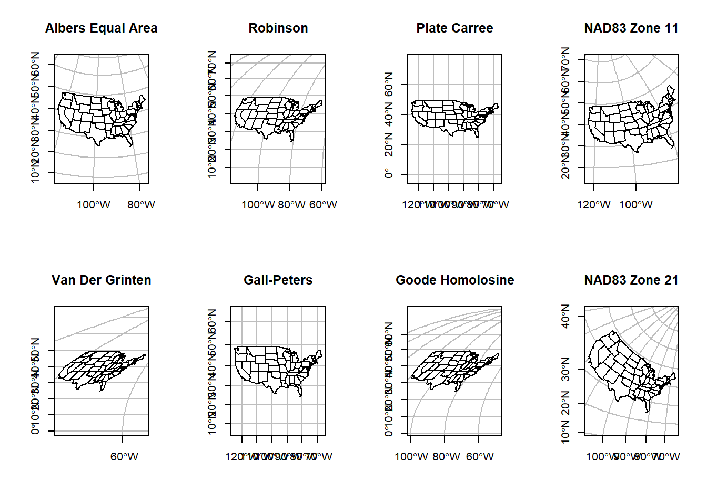
The code above relies on predefined CRSs, hence the
+proj=... statement. Some of these look really bad for
plotting the US. These are due to how the CRS is created. Some are conic
(Earth’s geoid is projected onto a cone), others are cylindrical
(projected onto a cylinder). Each has consequences for the distortion in
the resulting maps. PROJ4 strings take a number of other parameters that
define how the cone or cylinder are aligned for the projection. Below we
will define our own CRS using the Lambert
conformal conic projection.
## we can also define our own projection
layout(matrix(1:2, nrow = 2))
us_states %>% st_geometry() %>%
st_transform(crs = '+proj=lcc +lat_1=20 +lat_2=60 +lat_0=40 +lon_0=-96 +x_0=0 +y_0=0 +ellps=GRS80 +datum=NAD83 +units=m +no_defs') %>%
plot(col = 'white',
graticule = st_crs(wgs_usa),
axes = T, main = 'Lambert Conformal Standard')
us_states %>% st_geometry() %>%
st_transform(crs = '+proj=lcc +lat_1=33 +lat_2=45 +lat_0=39 +lon_0=-96 +x_0=0 +y_0=0 +ellps=GRS80 +datum=NAD83 +units=m +no_defs') %>%
plot(col = 'white',
graticule = st_crs(wgs_usa),
axes = T, main = 'Lambert Conformal USA')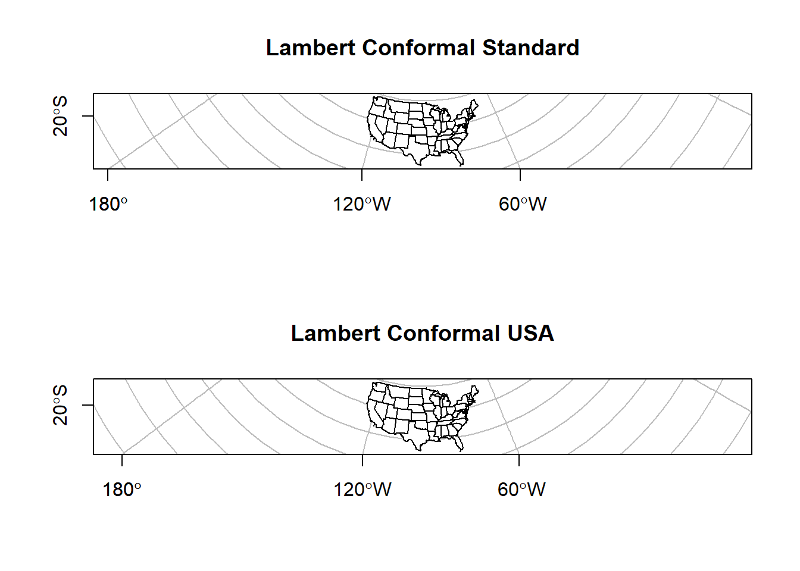
The map on the left shows the standard Lambert projection, while the map on the right shows the Lambert projections with the standard parallels set to show a good representation of the US.
Raster Data
You will almost always read raster data from external files. There are many different file types to store raster data. The most common is probably .tif, or .geotiff. R has a native raster format that is very compact with an extension .grd & .gri (there are two files). We will use this format to read in raster data.
# working with raster data ----
## save some data for later
save(counties, sf_points, rslt, nv, file = 'data/module2_6.RData')
## let's clean our workspace first
rm(list = ls())
load('data/module2_6.RData')
## load a raster
dem <- raster('data/nv_dem_coarse.grd')
## check dem structure
str(dem)## Formal class 'RasterLayer' [package "raster"] with 12 slots
## ..@ file :Formal class '.RasterFile' [package "raster"] with 13 slots
## .. .. ..@ name : chr "C:\\Users\\Kevin\\Documents\\GitHub\\R-Bootcamp\\data\\nv_dem_coarse.grd"
## .. .. ..@ datanotation: chr "FLT4S"
## .. .. ..@ byteorder : Named chr "little"
## .. .. .. ..- attr(*, "names")= chr "value"
## .. .. ..@ nodatavalue : num -3.4e+38
## .. .. ..@ NAchanged : logi FALSE
## .. .. ..@ nbands : int 1
## .. .. ..@ bandorder : Named chr "BIL"
## .. .. .. ..- attr(*, "names")= chr "value"
## .. .. ..@ offset : int 0
## .. .. ..@ toptobottom : logi TRUE
## .. .. ..@ blockrows : int 0
## .. .. ..@ blockcols : int 0
## .. .. ..@ driver : chr "raster"
## .. .. ..@ open : logi FALSE
## ..@ data :Formal class '.SingleLayerData' [package "raster"] with 13 slots
## .. .. ..@ values : logi(0)
## .. .. ..@ offset : num 0
## .. .. ..@ gain : num 1
## .. .. ..@ inmemory : logi FALSE
## .. .. ..@ fromdisk : logi TRUE
## .. .. ..@ isfactor : logi FALSE
## .. .. ..@ attributes: list()
## .. .. ..@ haveminmax: logi TRUE
## .. .. ..@ min : num 147
## .. .. ..@ max : num 3576
## .. .. ..@ band : int 1
## .. .. ..@ unit : chr ""
## .. .. ..@ names : chr "w001001"
## ..@ legend :Formal class '.RasterLegend' [package "raster"] with 5 slots
## .. .. ..@ type : chr(0)
## .. .. ..@ values : logi(0)
## .. .. ..@ color : logi(0)
## .. .. ..@ names : logi(0)
## .. .. ..@ colortable: logi(0)
## ..@ title : chr(0)
## ..@ extent :Formal class 'Extent' [package "raster"] with 4 slots
## .. .. ..@ xmin: num 240120
## .. .. ..@ xmax: num 766120
## .. .. ..@ ymin: num 3875611
## .. .. ..@ ymax: num 4653611
## ..@ rotated : logi FALSE
## ..@ rotation:Formal class '.Rotation' [package "raster"] with 2 slots
## .. .. ..@ geotrans: num(0)
## .. .. ..@ transfun:function ()
## ..@ ncols : int 263
## ..@ nrows : int 389
## ..@ crs :Formal class 'CRS' [package "sp"] with 1 slot
## .. .. ..@ projargs: chr "+proj=utm +zone=11 +ellps=GRS80 +units=m +no_defs"
## .. .. ..$ comment: chr "PROJCRS[\"unknown\",\n BASEGEOGCRS[\"unknown\",\n DATUM[\"Unknown based on GRS80 ellipsoid\",\n "| __truncated__
## ..@ history : list()
## ..@ z : list()## what is this?
dem@data@inmemory## [1] FALSEWow, that is a lot of data packed into a single class3. Check that last command. What does that mean? Well, the Raster package cleverly keeps raster data saved in on disk, in a temporary file, rather than loading it into memory. This is a very nice feature because raster data can be huge. Don’t let anyone tell you differently, geographic data was the first big data!
How about plotting the data? We have two different methods,
plot and image. The essentially do the same
thing. Pick your favorite.
## plot raster
terrain_colors <- rcartocolor::carto_pal(7, 'TealRose')
plot(dem)
## or, with a new set of more aesthetic colors!
image(dem, asp = 1, col = terrain_colors)
Let’s load a second raster. This next one represents major roads in
Nevada (from the Census TIGER dataset). I’ve converted the data from a
LINES object to a raster so that we can do
some computations with it. The plot below looks like a road network. If
you look closely down near Las Vegas you’ll see some darker green
colors. Those cells are all the roads and highways lumped together in a
single raster cell. The value of each cell in this data is the number of
roads in that cell.
# load a second raster, distance to roads ----
road_rast <- raster('data/road_dist.grd')
## plot
plot(road_rast, col = rcartocolor::carto_pal(7, 'Mint'))
Check the projection on our Raster objects. The rasters we just
loaded should be the same. What about when we compare it to
nv? This is one of those instances, again, where the
datasets are using the same coordinate reference system, however two
different methods have been used to apply that coordinate reference
system to the data. To prove they are the same coordinate reference
system, we can plot the state border over the dem raster.
## use the raster::projection function
projection(road_rast)## [1] "+proj=utm +zone=11 +ellps=GRS80 +units=m +no_defs"projection(dem)## [1] "+proj=utm +zone=11 +ellps=GRS80 +units=m +no_defs"identicalCRS(road_rast, dem)## [1] TRUE## compare to nv SpatialPolygonsDataFrame
identicalCRS(dem, as(nv, 'Spatial'))## [1] FALSE## proof these are the same crs
plot(dem, col = terrain_colors)
plot(nv, lwd = 3, add = T)
If we wanted to reproject the raster into a different coordinate
reference system we would use the raster::projectRaster
function. One of the parameters for this function is
filename. This parameter allows you to give the function a
filename so that data is saved onto disk as the operation progresses,
rather than saving it in memory. Most of the time you should specify a
filename when working with rasters.
sp vs. sf
The sf package is very new. The first version was
published on Jan 5, 2017. This means that not all packages play nicely
with sf, yet. The raster package is an
example. The core functions in raster can take
raster objects, or sp objects, but not
sf objects. This should be thought of as a minor nuisance.
We can use the as(x, 'Spatial) function from
sf to easily coerce sf objects to
sp objects. This can always be done as part of the function
call. You’ve already seen this in the code chunk above, and you’ll see
it as we continue working with the raster package. This is
what it will look like:
extract(dem, as(sf_points, 'Spatial')).
An al
Distance to Roads
Lets create a distance to roads raster from road_rast.
We can later use this to perform spatial overlays, intersections, or
joins. This should be a relatively quick operation. If you have an older
computer with a slower processor and few RAM patience is required.
# create distance to roads ----
road_dist <- distance(road_rast, filename = "road_dist.grd", overwrite = T)
## cool, what does this look like?
plot(road_dist)
plot(nv, lwd = 3, add = T)
Very cool! This raster represents a continuous measure of distance to roads across the landscape. White pixels are directly on roads, so the cell value is 0. The darker the and greener the color, the further away from major roads that cell is. The units for each cell are meters. This isn’t as clean as the DEM we have loaded. The lower left corner is all in California, and because we didn’t include any California roads in the calculation of this raster, that data isn’t accurate. Instead of including California roads we will clip or mask this raster to the state border.
## mask raster to NV border. This will set all values outside NV to NA
nv_road_dist <- mask(road_dist, mask = as(nv, 'Spatial'), filename = 'nv_road_dist.grd', overwrite = T)If you need to overwrite a file that already exists on disk
provide the overwrite = T parameter. Without this the
operation will error out.
## plot our new raster, with nevada border
plot(nv_road_dist)
plot(nv, lwd = 3, add = T)
The appearance of the raster changed but the data is still the same. The change in appearance is due to the range of our cell values. Check for yourself. Removing all those extremely large values from California changes the distribution of our cell values.
## compare raster values
summary(road_dist)## Warning in .local(object, ...): summary is an estimate based on a sample of 1e+05 cells (97.75% of all cells)## layer
## Min. 0.000
## 1st Qu. 6324.555
## Median 16124.516
## 3rd Qu. 39293.766
## Max. 322552.312
## NA's 0.000summary(nv_road_dist)## Warning in .local(object, ...): summary is an estimate based on a sample of 1e+05 cells (97.75% of all cells)## layer
## Min. 0.00
## 1st Qu. 4000.00
## Median 10198.04
## 3rd Qu. 20000.00
## Max. 64124.88
## NA's 30352.00Overlay Operations
We can perform overlay operations between vector and raster geometries, similar to what we did with two raster geometries. When interacting with raster-vector geometries this is referred to as extraction. The easiest way for me to think about this is with point data. We want to provide additional attribute data to the points by extracting the cell value from a raster at that points’ position.
# raster extraction ----
## global env setup
rm(road_dist, road_rast)Before we do anything else, lets visualize what we are trying to do. In the figure below we have several points ontop of the elevation DEM for Humboldt county. For each point on the map we want to get the value of the raster cell underneath that point.

Now let’s do the extraction.
## extract values from the dem
## this returns a vector of length = nrow(sf_points)
elevation <- raster::extract(dem, as(sf_points, 'Spatial'))
summary(elevation)## Min. 1st Qu. Median Mean 3rd Qu. Max. NA's
## 154.2 1242.4 1400.6 1353.8 1563.9 2959.7 31## this can be combined with our data
## and yes, this can be done in one step instead of 2
sf_points$elevation <- elevationOnce the extraction is complete, and we add this column to our data
we can do some data exploration. There are some NA values,
what is that about? We can also plot a histogram and see the
distribution of elevations for our data.
## and now, we can figure out the distribution of elevations in our data!
hist(sf_points$elevation * 3.28, main = 'Distribution of Elevation', xlab = 'Elevation (ft)', freq = T)
## what about those NAs?
na_points <- sf_points[is.na(sf_points$elevation), ]
## honestly, this 2000 number is purely experimental,
## change values till you get what you want on the map
bounds <- extend(extent(as(na_points, 'Spatial')), 2000)
## plot the map, zoom in on these points in the map
raster::plot(dem, ext = bounds, col = terrain_colors)
plot(st_geometry(na_points), col = 'black', add = T)
plot(nv, add = T)
This is due to the fact that a raster is a grid of rectangles (squares) and we can’t perfectly mimic every vector shape. A solution is to use smaller resolutions for rasters, or buffer the state border to include cells outside the state.
Interactive Maps
I’ll often hear that many people don’t use R as a GIS because it is hard to add basemaps. Well, some wonderful R user decided to write a library that allows for interactive mapping in R. Underneath the hood this library is calling a JavaScript library called leaflet.
load("data/module2_6.RData")
wgs_pts <- sf_points[1:100, ] %>% st_transform(4326)
library(leaflet)
# interactive mapping ----
leaflet::leaflet(wgs_pts) %>%
addTiles() %>%
addCircleMarkers(radius = 5)We can change the basemap too.
## leaflet provider tiles
leaflet::leaflet(wgs_pts) %>%
addProviderTiles(providers$Esri.WorldTopoMap) %>%
addCircleMarkers(radius = 5)And popups!
## and popups
leaflet::leaflet(wgs_pts) %>%
addTiles() %>%
addCircleMarkers(radius = 5, popup = paste(wgs_pts$species))Challenge: Spatial Lines
Lines are very similar to polygons. See if you can load a shapefile of lines and plot it over the counties.
- Read in the roads shapefile
- reproject to match the counties CRS
- Plot counties and roads
- Plot roads based on road type
- Intersect counties and roads
- Plot some intersections
###########
# CHALLENGE PROBLEMS
# SpatialLines solution ----
## 1. read in data
### HINT: use readshapefile
### data to use:
#### data/roads/roads.shp
#### data/counties/counties.shp
## 2. reproject
### HINT: check counties projection
## 3. plot
## 4. plot roads, style based on road type
## 5. intersect counties and roads
## 6. plot some of the intersections
## etc ...# SpatialLines solution ----
## read data
## reproject
## plot counties
## intersect
## etc ...The
rasteranddplyrlibraries each have a function calledselect. I prefer to loaddplyrfirst and have therasterlibrary mask theselectfunction in thedplyrlibrary. In order to call theselectfunction in therasterlibrary we need to explicitly reference the library we want to use with two colons:dplyr::select. When using double colons the libraries namespace (list of functions, variable, etc.) is loaded, but not attached to the session. This allows us to call function from libraries we haven’t explicitly loaded withlibrary()orrequrie()function. I have a tendancy to (over)use this method. It is very helpful when writing your own functions and libraries as those functions will not throw errors about a library not being loaded.↩︎In a spatial context the definition of vector is different than a how R refers to a vector. It is important to distinguish the two based on context. In this module I will pretty much always be refering to the geographic data .↩︎
R supports two different class types, S3 classes and S4 classes. All we really need to now about them right now is how they differ in terms of accessing values. The
@symbol is analogous to the$symbol for lists. It access named items from an S4 class. These items in S4 classes are called slots.↩︎